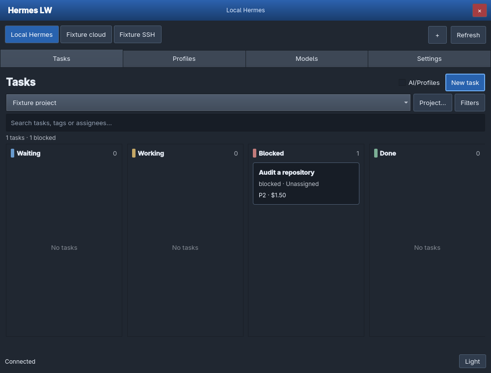
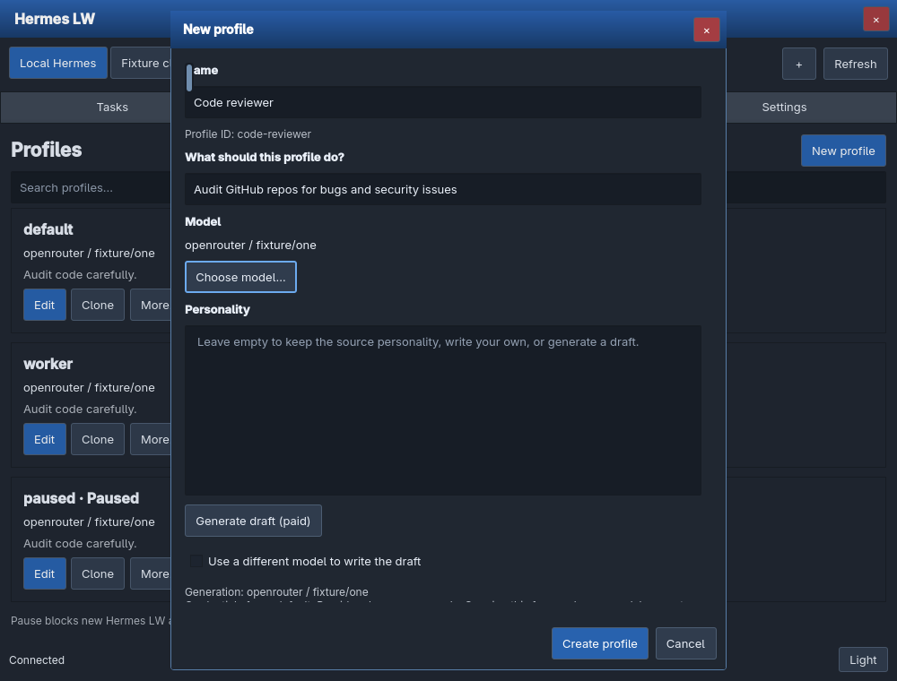
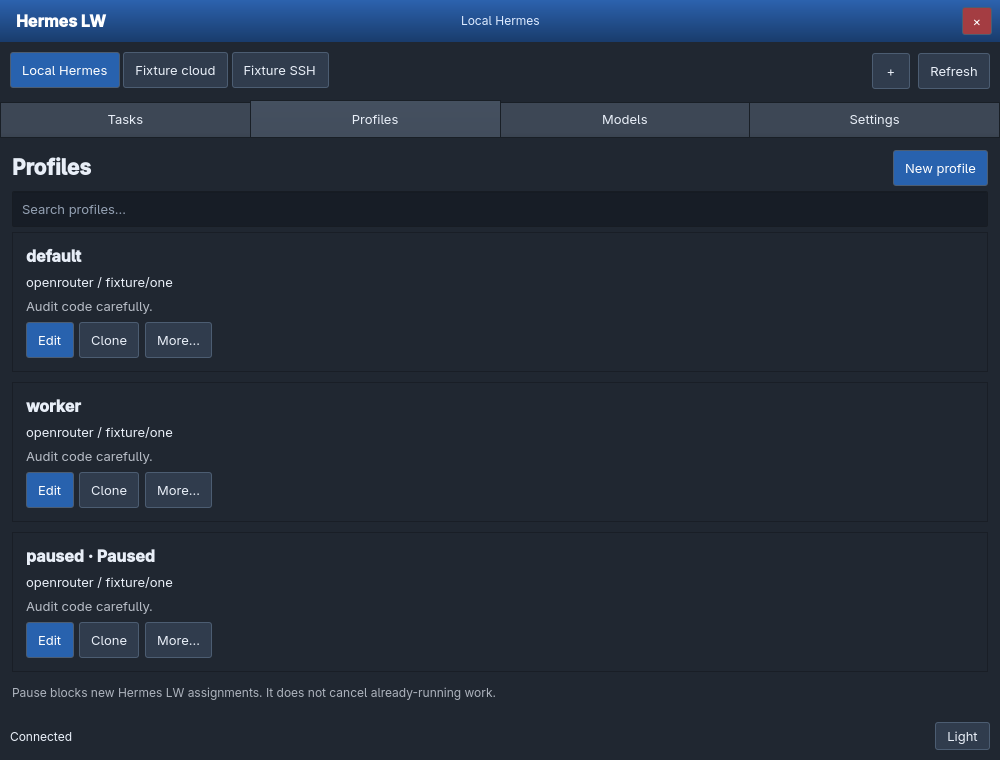
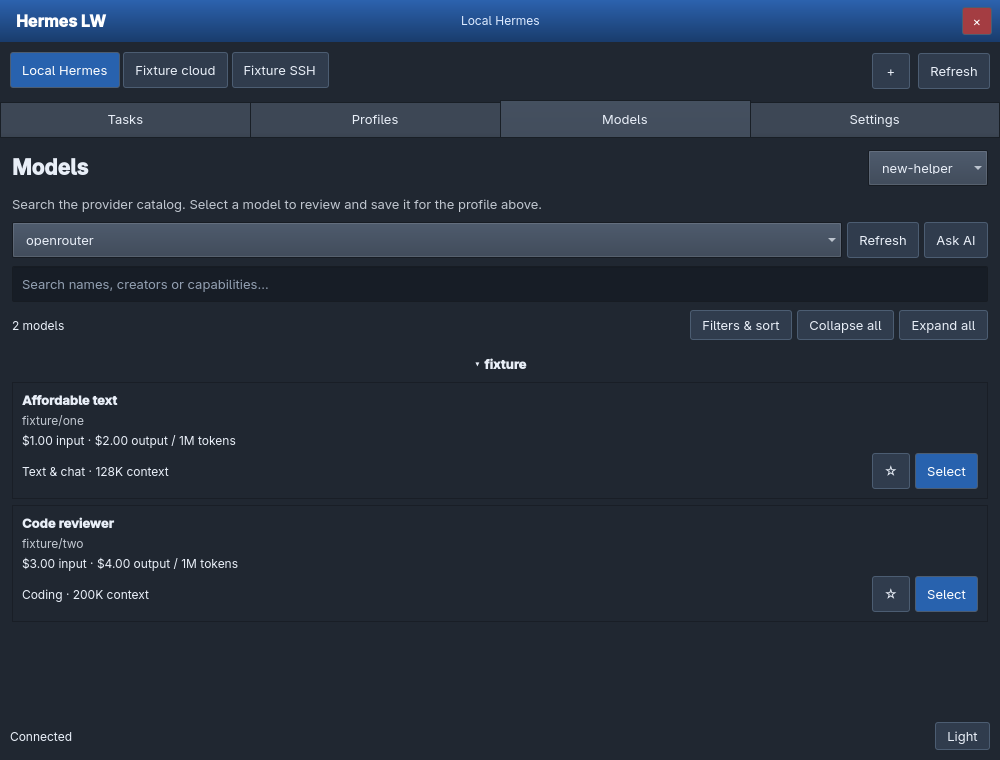
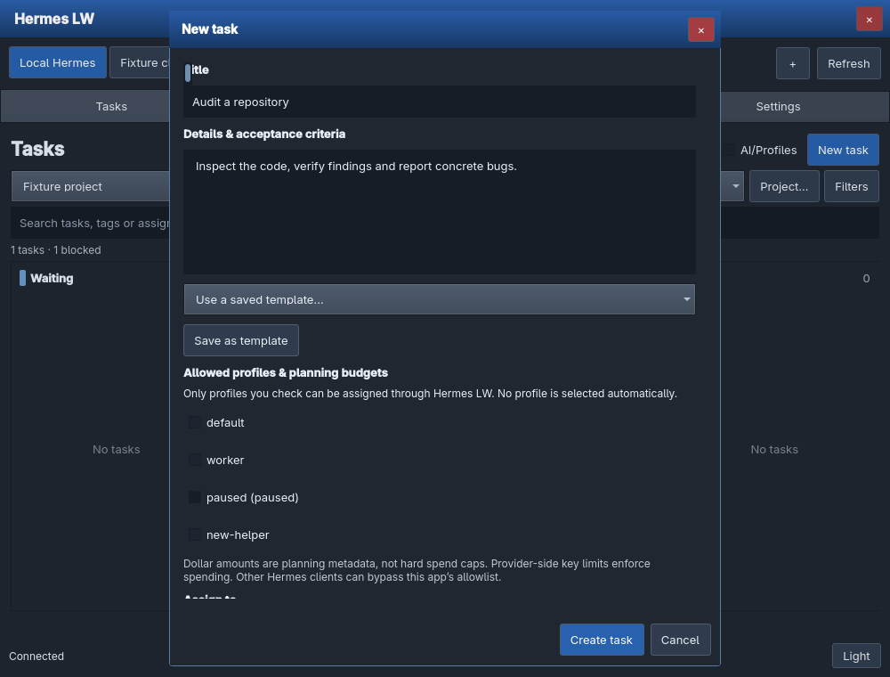
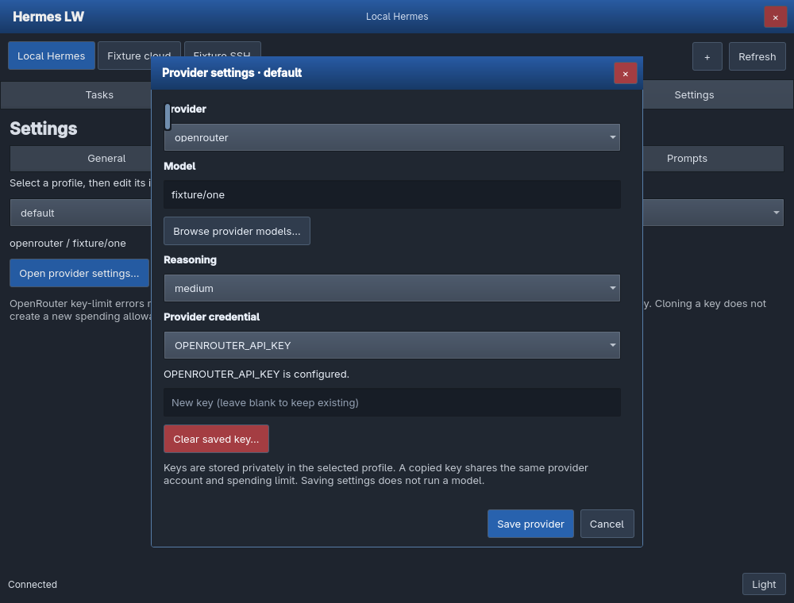

The interface has been rebuilt with standard Qt controls, adaptive layouts and scrollable forms. It keeps the Windows-inspired blue title bar and dark/light themes while removing the crowded dashboard and overlapping editors.
Projects, a clearer board and explicit profile access.Profiles
Clone default, edit personalities and choose models.Models
Provider catalogs, filters, favorites and AI advice.Settings
Providers, connections and reusable prompts.

Get started
- Install Hermes Agent, Quickshell and Python with PyYAML. Verify
hermesandqswork in your terminal. - Clone and launch the app:
git clone https://github.com/thediamondsaint/hermes-lw.git
cd hermes-lw
./launch.shThe launcher starts or reuses the matching local backend on 127.0.0.1:18731. Hermes LW tiles like a normal window and installs no floating/workspace rules. After a code update, close and reopen the app to load the new interface. Existing profiles, tasks and keys stay in their existing locations.
Use the connection tabs above the four page buttons. Refresh reloads the current connection’s project and profiles. Errors stay visible until dismissed; form errors remain inside the affected dialog.
Create, clone and edit profiles
- Open Profiles → New profile. Enter a name and its role. A name such as “Code reviewer” becomes the ID
code-reviewer. - Choose model… opens the full searchable provider catalog. Select returns the model to this form; it does not change an existing profile.
- Write the personality or leave it empty to inherit the source personality. Generate draft (paid) can draft instructions from the name/role. The exact model and credential source are shown before you click. A separate draft-writing model is optional.
- Copy settings, provider & API key exposes the advanced options. The default is a full copy of default, including its provider keys. You can choose another source, disable key copying, copy settings only or start blank.
- Review the draft and click Create profile. Saving never triggers generation automatically.

Each profile card has Edit, Clone and More…. More contains pause/resume, manager selection, tools/apps and deletion. Default cannot be deleted. Pause stops new assignments through Hermes LW; running work continues.

Find models without endless scrolling
Open Models or a model picker inside a form. Choose the credential profile and provider, then search names, creators, descriptions or capabilities.
- Filters & sort: filter use, favorites and independent maximum input/output prices; group by creator, use or input price; sort by name, input/output cost or context size.
- Collapse all / Expand all: control grouped results.
- ☆ / ★: save or remove a model favorite.
- Select: return to a form, or confirm a model change for the profile shown on the main Models page.
OpenRouter supplies published prices. Other provider catalogs follow Hermes’ installed provider registry and may not publish prices; these are labeled unavailable. Search/filter operations are local and do not run a model.
Ask AI recommends from up to 30 matching candidates. Describe your problem and select the priced text model that will write the recommendation. Submit explicitly; provider charges and retries may apply. A recommendation never silently changes a profile model.

Projects and tasks
The project selector sits above the board. Project… creates, edits, exports or archives a project. The board groups exact Hermes statuses into Waiting, Working, Blocked and Done; each card still displays its native status. Small tiles scroll the board horizontally.
- Click New task and enter its title, context and acceptance criteria.
- Check each profile that may work on the task. No profile is selected automatically. Enter a positive planning budget for every selected profile.
- Choose an assignee or leave it unassigned. Unassigned tasks start blocked; assigning a profile can make work runnable in Hermes.
- Set the maximum runtime, priority, workspace and optional date/tags. Create the task.
The AI/Profiles checkbox adds local suggestions based on task words. It makes no inference call and never checks a profile for you. Saved templates are available in the task form; saved views are under Filters.

Click a card for complete/block/unblock/promote/schedule/archive, assignment, priority, access/budget changes, estimates, comments and dependency links. Task context is read-only where the installed CLI cannot edit it.
Providers, prompts and tools
Settings → Providers opens a dedicated form for the selected profile’s provider, model, custom endpoint, reasoning and credentials. Leave a replacement-key field blank to keep the existing key. Clearing a key requires confirmation. OAuth/system-auth providers use Hermes’ own sign-in flow.

Settings → Prompts stores reusable/favorite prompts. Edit, copy, delete or explicitly open a local Hermes terminal with one. Terminal launch uses the selected profile’s model and can incur provider charges when run.
Profiles → More → Tools & apps controls toolsets, profile plugins and MCP apps. Plugin installs start disabled; enabling overrides is not automatic. MCP supports the Hermes catalog, HTTP services and local stdio commands. Connect only trusted code/services.
Local, remote and cloud connections
Use Settings → Connections → Add connection, or the + beside the connection tabs. Connection tabs identify Hermes instances. The selected instance supplies profiles, projects, models and prompts. Its last page/project/profile is remembered while the app runs. Requests must finish before switching.
SSH / VPS
- Install Hermes Agent, Python/PyYAML and this repository on the remote machine. Configure its provider credentials there.
- Run
python3 /path/to/hermes-lw/backend.pyon the remote host, withhermeson its PATH. Use a persistent user service for regular use. The default service port is 18731 and binds only to loopback. - Confirm your local SSH key works, for example
ssh hermes-vps. SSH aliases anduser@hostare supported. - Add an SSH / VPS connection: name, host/alias, SSH port and remote Hermes LW port.
- Save and select its connection tab. Hermes LW opens a private tunnel before loading the remote data. No provider keys need to be copied to the local app.
HTTPS / cloud gateway
- Run the same backend on the remote host behind a TLS reverse proxy such as Caddy or Nginx.
- Generate a separate gateway token with
openssl rand -hex 32. StoreHERMES_LW_TOKEN=YOUR_RANDOM_VALUEin a private service environment file (chmod 600) and restart the backend with it loaded. - Forward the HTTPS URL to
http://127.0.0.1:18731, preserving the Authorization header. Keep the backend loopback-only; expose the HTTPS proxy. - Add an HTTPS / cloud gateway connection with its name, URL and gateway token. The token is a Hermes LW access credential, not a provider API key.
- Select its tab. Requests go through the local backend; the token is not returned to QML. A blank token while editing keeps the saved token.
Use the same app/backend version on each host. Connection credentials are stored in an owner-only local file at ~/.local/share/hermes-control/connections.json, not an OS keychain.
Troubleshooting and verification
Generation fails
The form preserves your draft and shows the full error. Check the displayed provider/model and credential source. OpenRouter spending-limit errors require an adjusted provider-side limit or another key; the app will not increase limits or choose a different model/key. Tirith’s unavailable-scanner warning is not itself an inference failure.
Cannot connect
For local use, run ./launch.sh. Startup diagnostics are in ~/.cache/hermes-control/backend.log. For SSH, check the alias/key, service PATH and remote service port. For HTTPS, check the certificate, proxy URL and gateway token. Use Refresh after correcting the connection.
Run the checks
python -m pip install -r requirements-test.txt
python -m unittest discover -s tests -v
python tests/cli_generation_smoke.py
python tests/ui_smoke.pyThe CLI smoke test uses a real Hermes executable with a local fake streaming provider. The UI suite verifies tiling on desktop 4 and exercises native controls on an isolated Xvfb display. No real provider credentials or paid inference are used. See the repository README for test dependencies.